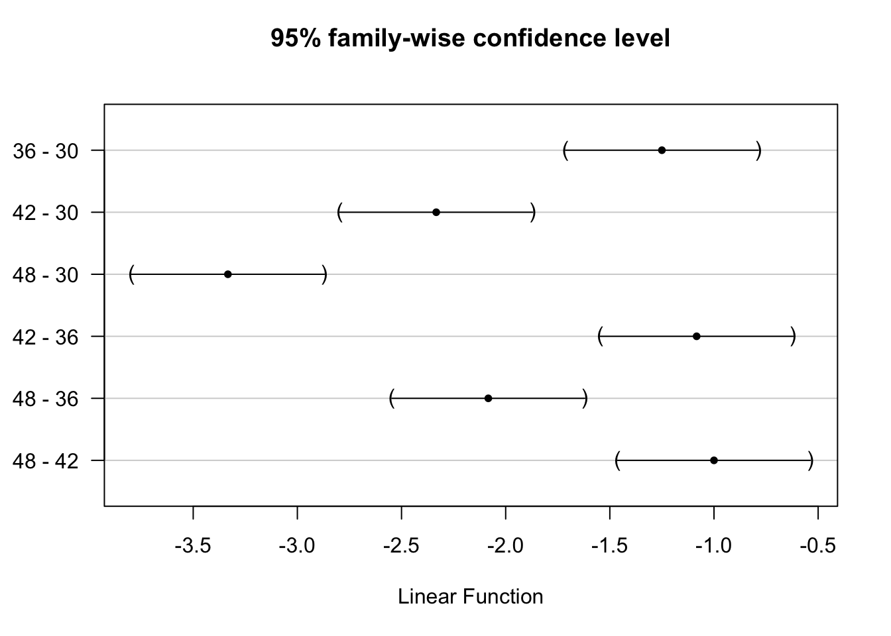
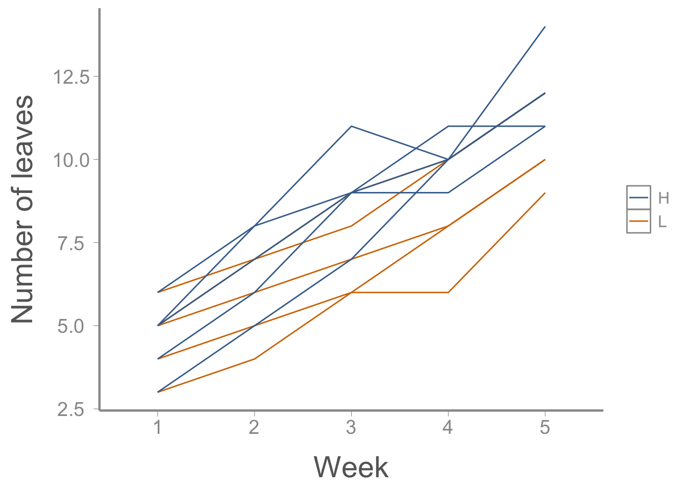

library(FANR6750data)
data("mothdata2")
str(mothdata2)
#> 'data.frame': 36 obs. of 3 variables:
#> $ larvae : num 16 16 15.8 14.2 13.9 14.2 13.5 13.4 14 13.1 ...
#> $ Treatment: chr "Bt" "Bt" "Bt" "Bt" ...
#> $ Plot : int 1 1 1 1 2 2 2 2 3 3 ...Lab 13: Nested Designs
FANR 6750: Experimental Methods in Forestry and Natural Resources Research
Fall 2026
Today’s topics
Nested Designs
Nested ANOVA model (ANOVA and lme procedures)
Split-plot design
Repeated measures
Nested ANOVA
Remember from lecture that nested designs are useful in situations where we subsample within each experimental unit and we’re interested in treatment effects at the experimental (whole) unit level, not the subunit level. For example:
We count larvae at multiple subplots within a plot
We weigh multiple chicks in a brood
We measure shrub growth at multiple subplots within a plot
The additive model
\[\large y_{ijk} = \mu + \alpha_i + \beta_{ij} + \epsilon_{ijk}\]
Can you define all of the terms in the linear model? Why do we need so many subscripts?
\[\large \beta_{ij} \sim normal(0, \sigma^2_B)\]
And as always,
\[\large \epsilon_{ijk} \sim normal(0, \sigma^2)\]
Hypotheses
Treatment effects:
\[\large H_0 : \alpha_1 = · · · = \alpha_a = 0\] \[\large H_a : at\; least\; one\; inequality\] Random variation among experimental units:
\[\large H_0 : \sigma^2_B = 0\]
\[\large H_a : \sigma^2_B > 0\]
Note: Here we have referred to the variance term as \(\sigma^2_B\) but we could use any reasonable subscript to refer to the variance term for the random effect.
Note: Recall that a nested ANOVA is primarily used when the variation among experimental units is of interest. If this variation was not of interest or if we had reason to believe that all the experimental units did not differ from each other, we can simplify to a one-way ANOVA by using the mean of all subunits within a whole unit as the response variable.
Example data
For this lab, we’ll use another data set on the response of gypsy moth larvae to pesticide treatments:
As before, we’ll need to convert Plot and Treatment to be factors:
mothdata2$Treatment <- factor(mothdata2$Treatment,
levels = c("Control", "Bt", "Dimilin"))
mothdata2$Plot <- factor(mothdata2$Plot)Note that we explicitly define the levels for Treatment so that control will be treated as the baseline level and plotted first. We don’t need to do that with Plot since the default numeric order is fine.
To see the level of replication within each treatment and plot, let’s cross-tabulate the data. It is a good idea to check this since unbalanced designs generally require some additional thought.
table(mothdata2$Treatment, mothdata2$Plot)
#>
#> 1 2 3 4 5 6 7 8 9
#> Control 0 0 0 4 4 4 0 0 0
#> Bt 4 4 4 0 0 0 0 0 0
#> Dimilin 0 0 0 0 0 0 4 4 4Notice how plots are labeled! Not according to \(j \in {1, 2, 3}\), even though there are three plots within each treatment (and four replicates within each plot). Rather, each plot is labeled independently, 1–9.
Why is this important?
Analysis using aov()
Based on the models we’ve fit previously this semester, we might instinctively analyze these data using the following:
aov.wrong <- aov(larvae ~ Treatment + Plot, data = mothdata2)
summary(aov.wrong)
#> Df Sum Sq Mean Sq F value Pr(>F)
#> Treatment 2 215.4 107.7 208.89 <2e-16 ***
#> Plot 6 11.2 1.9 3.61 0.0093 **
#> Residuals 27 13.9 0.5
#> ---
#> Signif. codes: 0 '***' 0.001 '**' 0.01 '*' 0.05 '.' 0.1 ' ' 1But if we do so, the denominator degrees of freedom are incorrect. Instead, we should use:
aov.correct <- aov(larvae ~ Treatment + Error(Plot), data = mothdata2)
summary(aov.correct)
#>
#> Error: Plot
#> Df Sum Sq Mean Sq F value Pr(>F)
#> Treatment 2 215.4 107.7 57.9 0.00012 ***
#> Residuals 6 11.2 1.9
#> ---
#> Signif. codes: 0 '***' 0.001 '**' 0.01 '*' 0.05 '.' 0.1 ' ' 1
#>
#> Error: Within
#> Df Sum Sq Mean Sq F value Pr(>F)
#> Residuals 27 13.9 0.516Can you spot the difference? What calculations changed between these two analyses?
Note: The next few code chunks are not necessary. They are simply demonstrating that what we are doing here is exactly the same as performing a one way ANOVA after averaging across the subunits.
What happens if we analyze plot-level means? The aggregate() function is similar to tapply() but it works on entire data frames. Here we get averages for each whole plot:
plotData <- aggregate(larvae ~ Treatment + Plot,
data = mothdata2, FUN = mean)
plotData
#> Treatment Plot larvae
#> 1 Bt 1 15.50
#> 2 Bt 2 13.75
#> 3 Bt 3 14.00
#> 4 Control 4 18.25
#> 5 Control 5 18.75
#> 6 Control 6 19.25
#> 7 Dimilin 7 12.50
#> 8 Dimilin 8 13.50
#> 9 Dimilin 9 13.00When we use aov() to analyze the aggregated data, we get the same F and p as before:
aov.plot <- aov(larvae ~ Treatment, data = plotData)
summary(aov.plot)
#> Df Sum Sq Mean Sq F value Pr(>F)
#> Treatment 2 53.8 26.92 57.9 0.00012 ***
#> Residuals 6 2.8 0.47
#> ---
#> Signif. codes: 0 '***' 0.001 '**' 0.01 '*' 0.05 '.' 0.1 ' ' 1Issues with analyzing nested data
When using using aov() with Error term:
You can’t use
TukeyHSD()You don’t get a direct estimate of \(\sigma^2_B\)
Doesn’t handle unbalanced designs well
But, you can use
model.tables()
An alternative is to use the lme() function in the nlme package (which is designed for mixed effects models)
Possible to get direct estimates of \(\sigma^2_B\) and other variance parameters
Handles very complex models and unbalanced designs
Possible to do multiple comparisons and contrasts using the
glht()function in themultcomppackage
Using the lme() function
To see how the lme() function works let’s fit the moth data model using this approach:
library(nlme)
library(multcomp)
lme1 <- lme(larvae ~ Treatment, random = ~1|Plot, data = mothdata2)The syntax for random effects can be a little confusing at first but see ?lme for additional information.
Now we can view the ANOVA table from the model using:
anova(lme1, Terms = "Treatment")
#> F-test for: Treatment
#> numDF denDF F-value p-value
#> 1 2 6 57.87 1e-04You’ll notice that it is a very simplified version of the ANOVA table. It only provides us with one line which relates to the treatment.
And we can view the variance parameter estimates:
VarCorr(lme1)
#> Plot = pdLogChol(1)
#> Variance StdDev
#> (Intercept) 0.3364 0.580
#> Residual 0.5156 0.718The first row shows the estimates of \(\sigma^2_B\) and \(\sigma_B\). These are redundant values since one can be calculated from the other. The second row shows the estimates of \(\sigma^2\) and \(\sigma\).
What can we say about the amount of random variation within whole units relative to among whole units (after accounting for treatment effects)? Does it appear that in this scenario the random effect of plot was necessary?
Note that we will reject the null hypothesis related to the variance (\(\sigma^2_B = 0\)) if the F-statistic (\(\frac{MS_B}{MS_E}\)) > \(F_{a(b-1), ab(n-1),\alpha}\). Keep in mind though that to get this F-statistic, we will need to use the aov() function approach.
Next, we can extract the plot-level random effects. These are the \(\beta_{ij}\)’s:
round(ranef(lme1), 2)
#> (Intercept)
#> 1 0.78
#> 2 -0.48
#> 3 -0.30
#> 4 -0.36
#> 5 0.00
#> 6 0.36
#> 7 -0.36
#> 8 0.36
#> 9 0.00And finally, multiple comparisons:
tuk <- glht(lme1, linfct = mcp(Treatment="Tukey"))
summary(tuk)
#>
#> Simultaneous Tests for General Linear Hypotheses
#>
#> Multiple Comparisons of Means: Tukey Contrasts
#>
#>
#> Fit: lme.formula(fixed = larvae ~ Treatment, data = mothdata2, random = ~1 |
#> Plot)
#>
#> Linear Hypotheses:
#> Estimate Std. Error z value Pr(>|z|)
#> Bt - Control == 0 -4.333 0.557 -7.78 <0.001 ***
#> Dimilin - Control == 0 -5.750 0.557 -10.32 <0.001 ***
#> Dimilin - Bt == 0 -1.417 0.557 -2.54 0.03 *
#> ---
#> Signif. codes: 0 '***' 0.001 '**' 0.01 '*' 0.05 '.' 0.1 ' ' 1
#> (Adjusted p values reported -- single-step method)
confint(tuk)
#>
#> Simultaneous Confidence Intervals
#>
#> Multiple Comparisons of Means: Tukey Contrasts
#>
#>
#> Fit: lme.formula(fixed = larvae ~ Treatment, data = mothdata2, random = ~1 |
#> Plot)
#>
#> Quantile = 2.344
#> 95% family-wise confidence level
#>
#>
#> Linear Hypotheses:
#> Estimate lwr upr
#> Bt - Control == 0 -4.333 -5.639 -3.028
#> Dimilin - Control == 0 -5.750 -7.055 -4.445
#> Dimilin - Bt == 0 -1.417 -2.722 -0.111Split-plot design
Although we did not cover them in lecture, split-plot designs are a special case of nested designs where treatments are applied at two levels of experimental units: whole-units and sub-units. We can conceptualize this as two blocked designs, one nested inside the other.
For example
Ag fields are sprayed with herbicides, and fertilizers are applied to plots within fields
Tenderizer is applied to roasts, and cooking times are applied to cores
In these cases, we’re interested in treatment effects at both levels
The additive model
We can write the split plot model as:
\[\large y_{ijk} = \mu + \alpha_i + \beta_j + \alpha \beta_{ij} + \gamma_k + \delta_{ik} + \epsilon_{ijk}\]
Where:
\(i = 1,...,a\): The whole unit treatment levels
\(j = 1,...,b\): The sub unit treatment levels
\(k = 1,...,c\): The number of blocks
The \(\alpha\)’s and \(\beta\)’s are fixed treatment effects where \(\alpha_i\) represents the treatment applied to the whole unit and \(\beta_j\) represents the treatment applied to the sub unit. Note the interaction \(\alpha \beta_{ij}\). The \(\gamma_i\) term represents a random block effect1. The \(\delta_{ik}\) term is a random whole-unit effect (the same term we labeled \(\beta_{ij}\) in the nested model above) and \(\epsilon_{ijk}\) is the residual variation.
Because we want our inferences to apply to all whole units, \(\delta_{ik}\) is random. Specifically:
\[\large \delta_{ik} \sim normal(0, \sigma^2_R)\]
We might view block as random too:
\[\large \gamma_k \sim normal(0, \sigma^2_C)\]
And as always,
\[\large \epsilon_{ijk} \sim normal(0, \sigma^2)\]
Data example
Below is a classic dataset which comes from a food science study. Six beef carcasses are obtained at random from a meat packaging plant. From the same section on each carcass, three rolled roasts are prepared as nearly alike as possible. Each of the roasts is assigned at random to one of three tenderizing treatments of particular interest: control, vinegar marinade, or papain marinade
After treatment, a coring device is used to make four cores of meat near the center of each roast. The cores are left in place and the three roasts from the same carcass are placed together in a oven and allowed to cook. After 30 minutes, one of the cores is taken at random from each roast, another drawn randomly after 36 minutes, a third at 42 minutes, and the final at 48 minutes
After cooling, the cores are measured for tenderness using the Warner-Bratzler device. The response variable is the WB score for each core.
library(FANR6750)
data("meatdata")
str(meatdata)
#> 'data.frame': 72 obs. of 5 variables:
#> $ Wbscore : num 8.25 7.5 4.25 3.5 7.25 6.25 3.5 3.5 6.5 4.5 ...
#> $ tenderizer: chr "C" "C" "C" "C" ...
#> $ time : int 30 36 42 48 30 36 42 48 30 36 ...
#> $ carcass : int 1 1 1 1 1 1 1 1 1 1 ...
#> $ roast : int 1 1 1 1 2 2 2 2 3 3 ...
summary(meatdata)
#> Wbscore tenderizer time carcass roast
#> Min. :2.00 Length:72 Min. :30.0 Min. :1.0 Min. : 1.0
#> 1st Qu.:3.25 Class :character 1st Qu.:34.5 1st Qu.:2.0 1st Qu.: 5.0
#> Median :4.25 Mode :character Median :39.0 Median :3.5 Median : 9.5
#> Mean :4.78 Mean :39.0 Mean :3.5 Mean : 9.5
#> 3rd Qu.:6.25 3rd Qu.:43.5 3rd Qu.:5.0 3rd Qu.:14.0
#> Max. :8.25 Max. :48.0 Max. :6.0 Max. :18.0As we’ve done with other examples, we need to convert each predictor to a factor (in this case, converting to factors is necessary to use the mcp() function, later in the analysis):
meatdata$time <- factor(meatdata$time)
meatdata$carcass <- factor(meatdata$carcass)
meatdata$roast <- factor(meatdata$roast)
meatdata$tenderizer <- factor(meatdata$tenderizer)What does it mean to treat time as a factor? How would you interpret the results from a model that treated time as a continuous predictor vs a factor?
Notice that all the roast column does is enumerate the tenderizer × carcass combinations (which explains why the corresponding term in the additive model is \(\delta_{ik}\)):
head(meatdata, n=12)
#> Wbscore tenderizer time carcass roast
#> 1 8.25 C 30 1 1
#> 2 7.50 C 36 1 1
#> 3 4.25 C 42 1 1
#> 4 3.50 C 48 1 1
#> 5 7.25 V 30 1 2
#> 6 6.25 V 36 1 2
#> 7 3.50 V 42 1 2
#> 8 3.50 V 48 1 2
#> 9 6.50 P 30 1 3
#> 10 4.50 P 36 1 3
#> 11 3.50 P 42 1 3
#> 12 2.50 P 48 1 3Analysis using lme()
Using the lme() function, we are able to have multiple random effects in our model.
library(nlme)
lme.meat <- lme(Wbscore ~ tenderizer * time,
random = ~1|carcass/roast,
data = meatdata,
correlation = corCompSymm()) # Make results same as ANOVA table results)Note that the random effect argument tells the model that roasts (i.e., whole units) are nested within carcass (i.e., blocks), which correctly deals with the multi-level non-independence of this design (cores nested within roasts nested within carcasses).
Look at the results:
anova(lme.meat)[-1,]
#> numDF denDF F-value p-value
#> tenderizer 2 10 190.0 <.0001
#> time 3 45 656.6 <.0001
#> tenderizer:time 6 45 18.5 <.0001The first row of the ANOVA table is for the (Intercept) term, which we can ignore here (hence the [-1,] indexing operation):
Exploring the interaction
Is the time effect significant for each level of tenderizer?
To test that interaction, we can create subsetted ANOVAs to look at the effect of one variable across multiple levels of another.
lme.meatP <- lme(Wbscore ~ time, data = meatdata,
random = ~1|carcass/roast,
correlation = corCompSymm(),
subset = tenderizer=="P")
anova(lme.meatP, Terms = "time")
#> F-test for: time
#> numDF denDF F-value p-value
#> 1 3 15 126.7 <.0001lme.meatV <- lme(Wbscore ~ time, data = meatdata,
random = ~1|carcass/roast,
correlation = corCompSymm(),
subset = tenderizer=="V")
anova(lme.meatV, Terms = "time")
#> F-test for: time
#> numDF denDF F-value p-value
#> 1 3 15 274.7 <.0001lme.meatC <- lme(Wbscore ~ time, data = meatdata,
random = ~1|carcass/roast,
correlation = corCompSymm(),
subset = tenderizer=="C")
anova(lme.meatC, Terms = "time")
#> F-test for: time
#> numDF denDF F-value p-value
#> 1 3 15 305.7 <.0001Yes, the time effect is significant for each level of tenderizer, though note that this approach does not correct for multiple comparisons.
Multiple comparisons using glht() (package multcomp)
Within each tenderizer treatment, we can test for variation among time treatments in a way that accounts for multiple comparisons using the glht() function:
library(multcomp)
mcP <- glht(lme.meatP, linfct = mcp(time="Tukey"))
summary(mcP)
#>
#> Simultaneous Tests for General Linear Hypotheses
#>
#> Multiple Comparisons of Means: Tukey Contrasts
#>
#>
#> Fit: lme.formula(fixed = Wbscore ~ time, data = meatdata, random = ~1 |
#> carcass/roast, correlation = corCompSymm(), subset = tenderizer ==
#> "P")
#>
#> Linear Hypotheses:
#> Estimate Std. Error z value Pr(>|z|)
#> 36 - 30 == 0 -1.25 0.18 -6.94 < 1e-07 ***
#> 42 - 30 == 0 -2.33 0.18 -12.96 < 1e-07 ***
#> 48 - 30 == 0 -3.33 0.18 -18.52 < 1e-07 ***
#> 42 - 36 == 0 -1.08 0.18 -6.02 < 1e-07 ***
#> 48 - 36 == 0 -2.08 0.18 -11.57 < 1e-07 ***
#> 48 - 42 == 0 -1.00 0.18 -5.55 1.2e-07 ***
#> ---
#> Signif. codes: 0 '***' 0.001 '**' 0.01 '*' 0.05 '.' 0.1 ' ' 1
#> (Adjusted p values reported -- single-step method)We can also easily plot the differences between cooking times for “P” tenderizer (and for the other 2 levels of tenderizer as well)
plot(mcP)
Note that time was a treatment variable in this model, but because of the way time treatments were applied (using the cores), it was possible to randomize cooking time. This is somewhat of a unique case because time usually cannot be randomized.
Repeated measures
Experiments that use “repeated measures” are those that have the following components:
We randomly assign each ‘subject’ to a treatment
We record the response to the treatment over time
In these cases, we need to think about several sources of variation in the model:
Treatment
Time
Treatment-time interaction
Random variation among subjects
Random variation within subjects
However, unlike the split-plot example, time cannot be randomized in repeated measures studies and this form on non-independence must be accounted for during analysis.
Additive model
\[ y_{ijk} = \mu + \alpha_i + \beta_j + \alpha\beta_{ij} + \delta_{ik} + \epsilon_{ijk} \]
Where:
\(\mu\): Grand mean
\(\alpha_i\): effect of the ith treatment level
\(\beta_j\): effect of the jth time level
\(\alpha\beta_{ij}\): interaction effect between treatment and time levels
\(\delta_{ik}\): effect of kth subject receiving the ith treatment level
\(\epsilon_{ijk}\): residual error
What would be the hypotheses related to this model?
Which effects are fixed and which are random?
Note also that, unlike the split-plot example, we do not have a block term in this model. We can, however, easily add one if our design includes blocks using the same random effect formulation shown in the meatdata example.
Data example
The dataset below contains information on leaf growth by 10 plants subjected to different fertilizer treatments. Leaf growth on each plant was measured weekly for 5 weeks.
library(FANR6750)
data("plantdata")Before beginning the analysis, we will want to convert some variables to factors.
plantdata$plant <- factor(plantdata$plant)
plantdata$fertilizer <- factor(plantdata$fertilizer)
plantdata$weekFact <- factor(plantdata$week)
str(plantdata)
#> 'data.frame': 50 obs. of 5 variables:
#> $ plant : Factor w/ 10 levels "1","2","3","4",..: 1 1 1 1 1 2 2 2 2 2 ...
#> $ fertilizer: Factor w/ 2 levels "H","L": 2 2 2 2 2 2 2 2 2 2 ...
#> $ week : int 1 2 3 4 5 1 2 3 4 5 ...
#> $ leaves : int 4 5 6 8 10 3 4 6 6 9 ...
#> $ weekFact : Factor w/ 5 levels "1","2","3","4",..: 1 2 3 4 5 1 2 3 4 5 ...As always, it helps to visualize the data:
library(ggplot2)
ggplot(plantdata, aes(x = weekFact, y = leaves,
group = plant,
color = fertilizer)) +
geom_path() +
scale_x_discrete("Week") +
scale_y_continuous("Number of leaves")
Analysis using mixed effects model with correlation structure
Using the lme() function, we are able to have multiple random effects in our model. Let’s start by fitting a model that treats week as a categorical predictor and assumes compound symmetry:
library(nlme)
lme.plant <- lme(leaves ~ fertilizer * weekFact,
random = ~ (week - 1)|plant,
data = plantdata,
correlation = corCompSymm())Note that we still specify the numeric version of week in the random effect part of the model. The categorical variable is only used in the fixed effect part of the model.
Look at the results:
anova(lme.plant)[-1,]
#> numDF denDF F-value p-value
#> fertilizer 1 8 1.56 0.2474
#> weekFact 4 32 132.28 <.0001
#> fertilizer:weekFact 4 32 2.85 0.0399What is your conclusion about the effect of fertilizer treatments? Is there an interaction between treatment and time?
Exploring the interaction
Is the time effect significant for each level of fertilizer treatment?
One way to test whether fertilizer treatments differ during each week is to use the enmeans(), which allows us to specify specific contrasts and apply corrections for multiple tests (unlike the subset approach used above):
library(emmeans)
plant.emm <- emmeans(lme.plant, ~ fertilizer * weekFact)
pairs(plant.emm, simple = "fertilizer", adjust = "bonferroni")
#> weekFact = 1:
#> contrast estimate SE df t.ratio p.value
#> H - L 0.0 0.797 8 0.000 1.0000
#>
#> weekFact = 2:
#> contrast estimate SE df t.ratio p.value
#> H - L 1.0 0.806 8 1.240 0.2500
#>
#> weekFact = 3:
#> contrast estimate SE df t.ratio p.value
#> H - L 1.8 0.821 8 2.192 0.0597
#>
#> weekFact = 4:
#> contrast estimate SE df t.ratio p.value
#> H - L 1.6 0.841 8 1.902 0.0937
#>
#> weekFact = 5:
#> contrast estimate SE df t.ratio p.value
#> H - L 1.4 0.867 8 1.615 0.1449
#>
#> Degrees-of-freedom method: containmentWhich contrasts are significant? What is the advantage of only testing H vs. L within each week (as opposed to every combination of fertilizer vs week)?
Treating time as continuous
We can also fit the model treating week as a continuous variable:
lme.plant2 <- lme(leaves ~ fertilizer * week,
random = ~ (week - 1)|plant,
data = plantdata,
correlation = corCompSymm())Look at the results:
anova(lme.plant2)[-1,]
#> numDF denDF F-value p-value
#> fertilizer 1 8 1.9 0.2062
#> week 1 38 511.8 <.0001
#> fertilizer:week 1 38 5.6 0.0235Do your conclusions change from the version above? Why might you choose to model week as categorical vs continuous?
Assignment
Create an R Markdown file to do the following:
Re-fit the first repeated measures model from above, but assuming autoregressive covariance structure instead of compound symmetry (see lecture slides for the AR1 correlation option). Do your conclusions about the effect of fertilizer treatments or their interaction with time change?
As mentioned in the model selection lab, AIC can be useful for comparing alternative formulations of a model where a priori hypotheses are not relevant. Calculate the AIC of the compound symmetry and AR1 models. Construct a complete AIC table comparing the two models. Which model would you choose based on these results?
Re-fit the top model from question 2 but without an interaction between fertilizer and time. Interpret each parameter estimate from that model and state your conclusions about the effects of fertilizer treatments and time. Which model would you base your conclusions on (the interaction or the additive model) and why?
At the end of your report, under a header titled “Reflection”, answer the following questions:
On a 1-10 scale, how would you rate your confidence in the topics covered in this lab?
What lingering questions/confusion about these topics do you still have?
A few things to remember when creating the document:
Be sure to include your name in the
authorfield of the headerBe sure the output type is set to:
output: html_documentBe sure to set
echo = TRUEin allRchunks so that all code and output is visible in the knitted documentRegularly knit the document as you work to check for errors
See the R Markdown reference sheet for help with creating
Rchunks, equations, tables, etc.If you use AI on any part of your assignment, you must include the full prompt(s) you used and it’s full answer(s) in a separate section titled “AI assistance” at the end of this document.
See the “Creating publication-quality graphics” reference sheet for tips on formatting figures
Footnotes
Note that this term is optional. If you do not have blocks, it can be removed↩︎